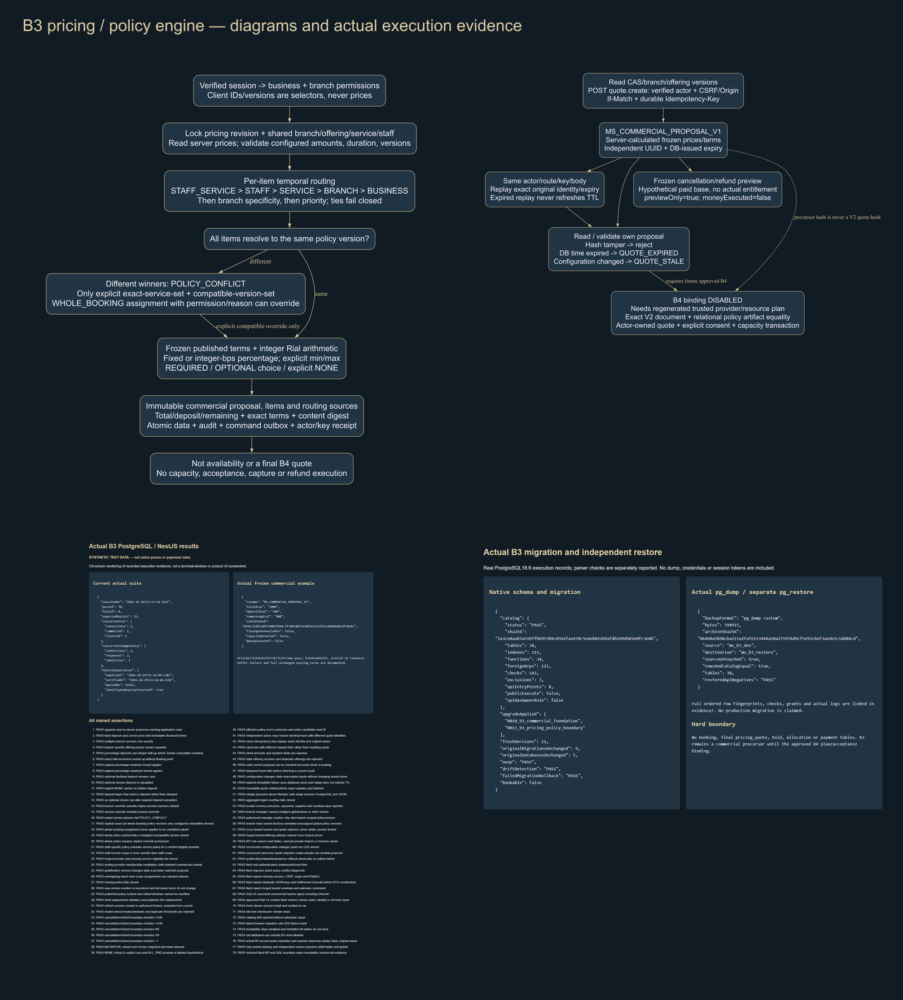
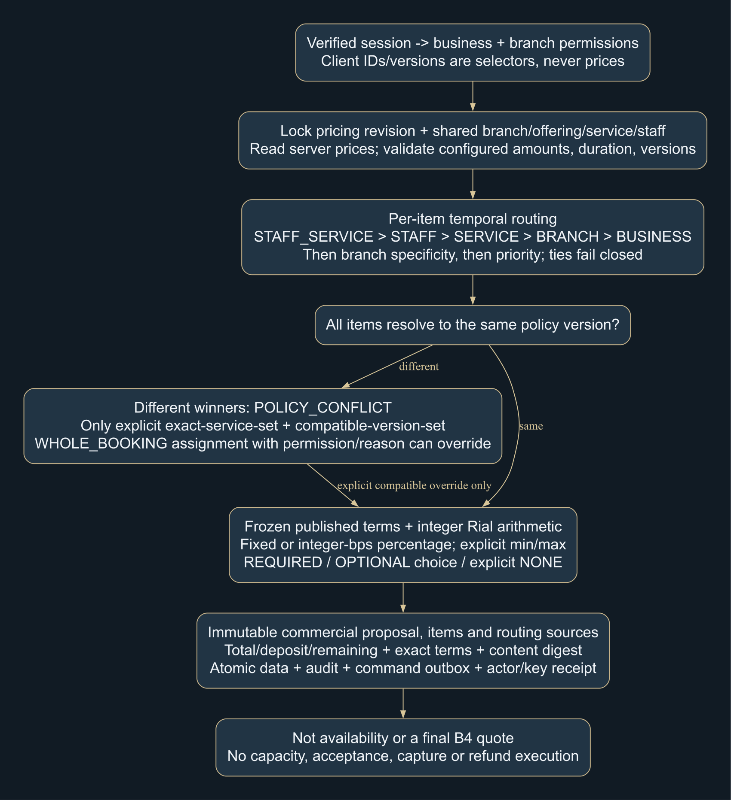
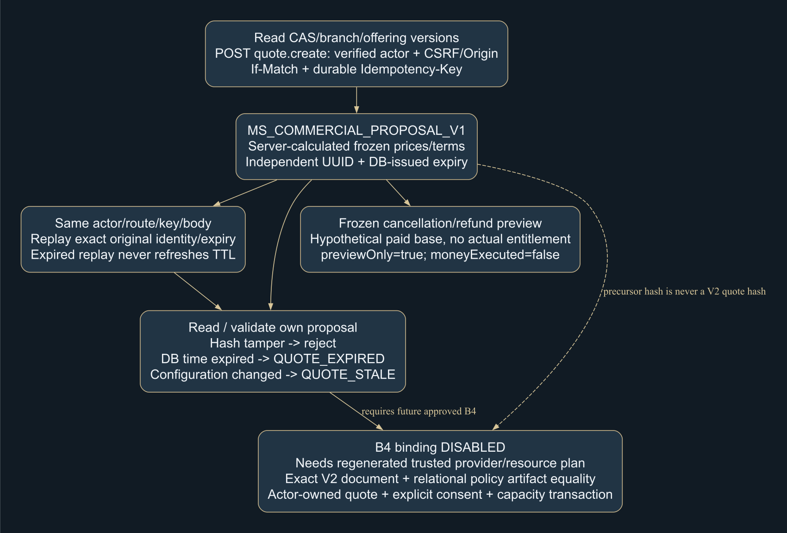
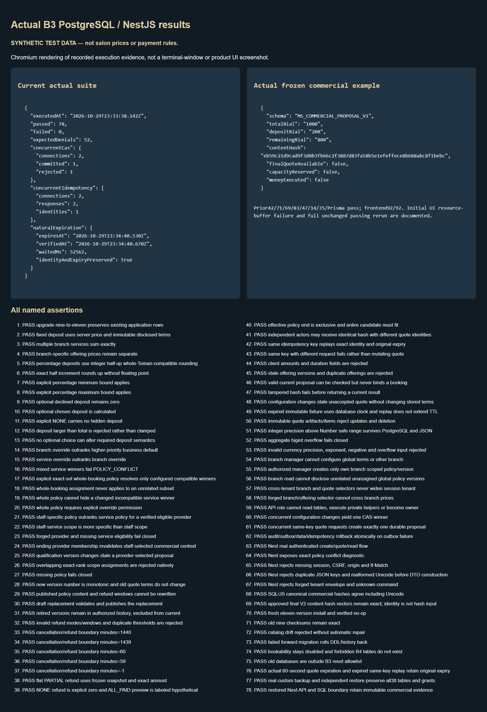
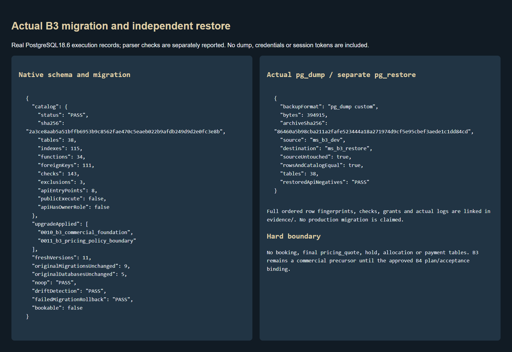

78 actual PostgreSQL/Nest tests pass; prior42/71/69/83/47/14/35/Prisma and92 frontend pass. No approved product UI changed.
Commercial precursor only: MS_COMMERCIAL_PROPOSAL_V1; final MS_QUOTE_CONTENT_V2 needs a verified B4 provider/resource plan. No actual prices/rules seeded, booking, capacity, payment, refund execution, notification, CMS or deployment.





Result captures render actual recorded execution. Owner business/legal/configuration choices and B4 prerequisites remain in OPEN_DECISIONS.md. Stop for B3 review.